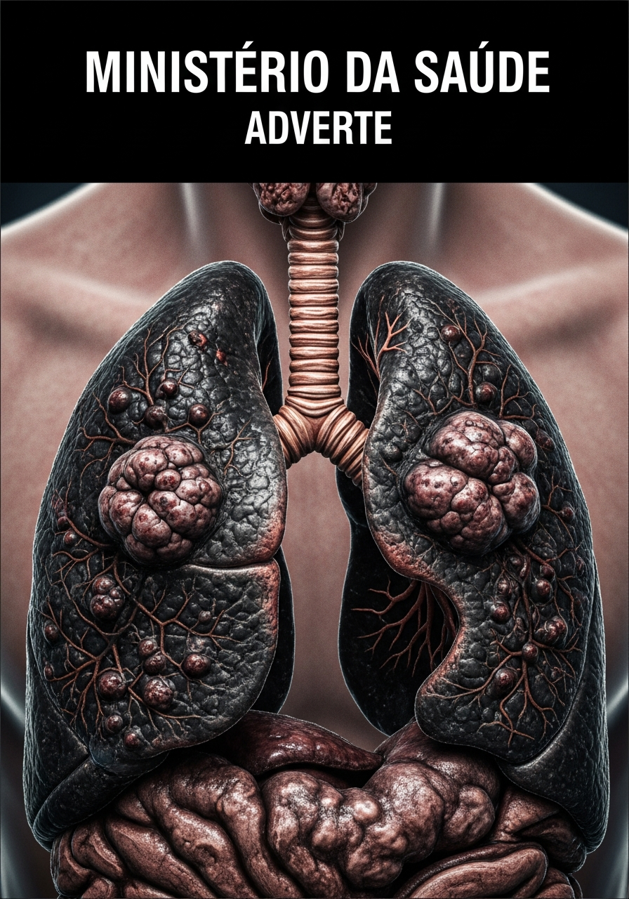

com o "pod" que você finge não ver no bolso dele.
Causa Câncer.
Causa Enfisema.
Destrói o Cérebro.
"O Ministério da Saúde adverte: O uso deste produto causa dependência física e psicológica severa em adolescentes."
Enquanto você lê isso, a nicotina dos sais (6× mais potente que cigarro comum) está fritando o córtex pré-frontal dele: atenção destruída, impulsividade explosiva, risco multiplicado de depressão e ansiedade.
Você vai continuar assistindo ele se destruir em silêncio?
✔ Entrega imediata · ✔ Garantia de 7 dias

O organismo adolescente é muito mais suscetível à nicotina. A dependência pode se instalar em semanas, não meses.
Irritabilidade, isolamento, mudanças de humor sem motivo aparente. Sinais que muitos pais atribuem à "fase da adolescência".
A nicotina altera a química cerebral em desenvolvimento. Dificuldade de concentração, queda no rendimento escolar e agitação são consequências diretas.
O uso frequente de nicotina está associado a maior risco de ansiedade, baixa autoestima e dificuldade em lidar com frustrações durante a adolescência.
Grande parte dos adolescentes começa por influência de grupos. O uso vira um símbolo de pertencimento — o que dificulta muito a saída sem apoio familiar.
O POD não deixa cheiro forte de cigarro, cabe em qualquer bolso e pode ser usado em segundos. É fácil de esconder — inclusive dentro de casa.
Existem sinais silenciosos que muitos pais ignoram no começo — não por descuido, mas porque parecem coisas comuns da adolescência.
O problema é que esses comportamentos têm padrões específicos quando ligados ao uso de cigarro eletrônico. E saber identificá-los faz toda a diferença para agir no momento certo.
Mudanças de humor repentinas sem motivo claro
Saídas frequentes e rápidas sem explicação
Distanciamento emocional e irritabilidade crescente
Esses são apenas 3 dos 10 sinais detalhados no guia. Os outros 7 são os que mais passam despercebidos — e os mais relevantes para uma abordagem eficaz.
Sinal identificado mas revelado só no guia...
Sinal identificado mas revelado só no guia...
Sinal identificado mas revelado só no guia...
Outros sinais detalhados
no material completo
"E se isso já for um vício? E se eu agir errado e piorar tudo?"
Medo"Abordo e ele se fecha ainda mais? Fico quieto e a coisa piora?"
Dúvida"Sinto que não tenho as ferramentas certas para lidar com isso."
Impotência"Vejo meu filho mudando e não sei se é a adolescência ou outra coisa."
InsegurançaUm material organizado, direto e prático — desenvolvido para pais que querem intervir de forma inteligente, sem desespero e sem afastar o filho.
Os comportamentos mais comuns que indicam que um adolescente pode estar usando cigarro eletrônico — incluindo os que passam completamente despercebidos.
Como iniciar a conversa sem acusações, sem confronto e sem deixar seu filho na defensiva — aumentando as chances reais de ser ouvido.
Como observar mudanças de comportamento ao longo do tempo e identificar possíveis recaídas antes que elas se consolidem.
Passos práticos e organizados para que você possa intervir no momento certo, com mais confiança e menos desespero.
A dependência da nicotina em adolescentes tende a se intensificar com o tempo. Quanto mais cedo os sinais são identificados e a abordagem começa, maiores as chances de uma intervenção eficaz.
Curiosidade, experimentação social. Fácil de abordar. Mais fácil de reverter.
O uso começa a se tornar rotineiro. Os sinais ficam mais evidentes — mas a resistência também aumenta.
Quando a dependência está consolidada, a abordagem exige muito mais — e os resultados levam mais tempo.
O momento de agir é antes de ter certeza — não depois.
QUERO AGIR AGORASe por qualquer motivo você não ficar satisfeito com o material, basta nos contatar dentro de 7 dias após a compra e devolveremos 100% do seu investimento, sem perguntas, sem burocracia.
Você não está correndo nenhum risco. O risco real está em não agir.
O problema é sério. Os sinais podem já estar presentes. E você tem agora a oportunidade de entender o que está acontecendo e saber exatamente como agir — com clareza, com estratégia e sem desespero.
Acesso imediato · Pagamento seguro · Garantia de 7 dias